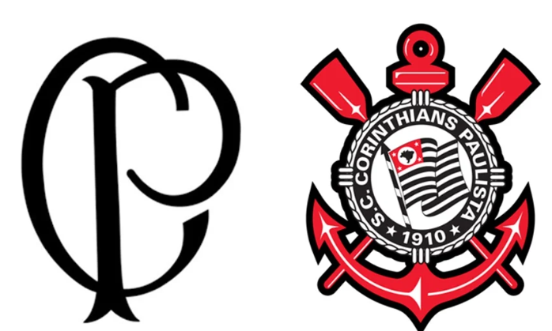

O Sport Club Corinthians Paulista é um dos clubes de futebol mais populares e vitoriosos do Brasil. Fundado em 1910 por um grupo de operários no bairro do Bom Retiro, em São Paulo, o clube foi batizado em homenagem ao time inglês Corinthian-Casuals FC, que estava em turnê pelo Brasil na época. O Corinthians é conhecido por ter conquistado uma grande variedade de títulos, incluindo o Mundial de Clubes da FIFA, a Copa Libertadores da América, o Campeonato Brasileiro (em diversas ocasiões), a Copa do Brasil e o Campeonato Paulista. Sua história é marcada por grandes jogadores que vestiram a camisa alvinegra, como Sócrates, Rivellino, Casagrande, Marcelinho Carioca, Ronaldo Fenômeno e Cássio.
A torcida do Corinthians, apelidada de Fiel, é considerada uma das maiores e mais apaixonadas do mundo. É conhecida por sua lealdade incondicional ao time, acompanhando-o de perto em todos os jogos, tanto em casa quanto fora. A Fiel se destaca por seu apoio inabalável mesmo em momentos de dificuldade do clube. A torcida é responsável por criar uma atmosfera única e intimidante para os adversários na Neo Química Arena. O canto "Vai, Corinthians!" é um dos mais famosos do futebol brasileiro e se tornou um símbolo de união e força entre os torcedores. A Fiel é mais do que uma torcida, é parte da identidade do clube, influenciando diretamente a sua cultura e história. Sua paixão é o motor que impulsiona o time.